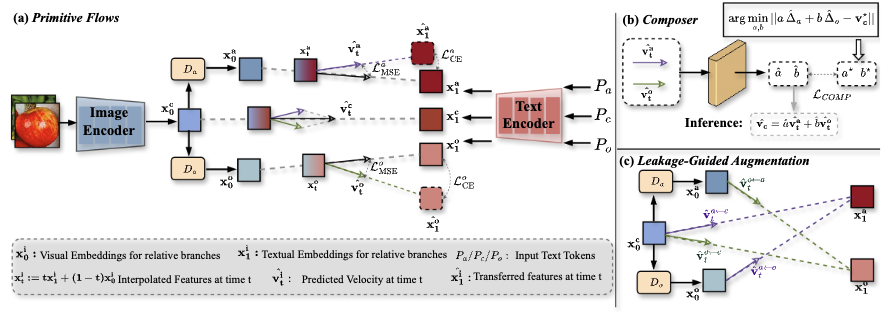
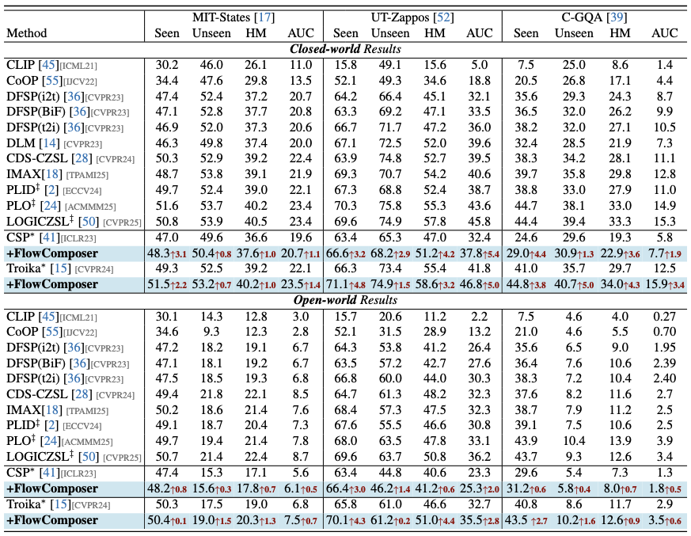
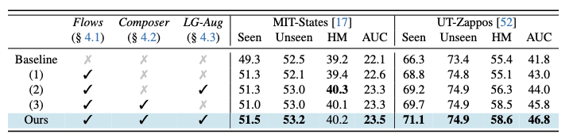

CVPR 2026
Compositional zero-shot learning recognizes unseen attribute-object compositions by recombining primitives learned from seen pairs. FlowComposer revisits this setting through flow matching and replaces implicit token-level composition with an explicit transport process in the embedding space.
Existing PEFT-based CZSL methods usually decompose image features with visual disentanglers and model composition through prompt concatenation or branch-wise prompt tuning. As illustrated in the teaser, this design still constructs compositions implicitly at the token level, which can leave unseen compositions poorly aligned with image features.
FlowComposer addresses them with two primitive flows that transport visual features toward attribute and object text embeddings, plus a learnable Composer that explicitly fuses their velocity fields into a composition flow. The figure also highlights the second issue, remained feature entanglement, which motivates the leakage-guided augmentation used to turn cross-branch leakage into auxiliary supervision.
Learn time-conditioned transports from visual embeddings to attribute and object text targets instead of only relying on prompt engineering.
Predict combination coefficients and explicitly compose primitive velocity fields into a composition flow in embedding space.
Reuses imperfectly disentangled features as constructive auxiliary signals rather than treating residual entanglement purely as noise.
FlowComposer is model-agnostic and can be integrated into existing CZSL baselines as a plug-and-play component.

Overview of FlowComposer. The model learns primitive flows for attribute and object transport, predicts composition coefficients with the Composer, and adds leakage-guided augmentation to reuse residual cross-branch cues during training.
The framework first learns two primitive flows that move visual embeddings toward attribute and object text embeddings. Instead of composing concepts through token concatenation, FlowComposer approximates the composition velocity as a combination of primitive velocities and lets the Composer predict the combination coefficients.
This design makes composition an explicit operation in the shared embedding space, which is exactly the part the paper argues is missing in prior PEFT-style CZSL pipelines.
The paper evaluates FlowComposer on MIT-States, UT-Zappos, and C-GQA by integrating it into standard CZSL baselines.

Main quantitative comparison on MIT-States, UT-Zappos, and C-GQA under both closed-world and open-world settings. FlowComposer consistently improves CSP and Troika when plugged into the same baseline pipelines.
The ablation study shows that primitive flows, the Composer, and leakage-guided augmentation are complementary rather than redundant.

Ablation study on MIT-States and UT-Zappos. Primitive flows, the Composer, and leakage-guided augmentation each contribute, and the full model achieves the best overall AUC while remaining competitive on Seen, Unseen, and HM.
Starting from the baseline, primitive flows alone already improve recognition. Adding leakage-guided augmentation raises MIT-States to 40.3 HM and 23.3 AUC, while adding the Composer raises UT-Zappos to 58.5 HM and 45.8 AUC.
When all three components are combined, the full model reaches 23.5 AUC on MIT-States and 46.8 AUC on UT-Zappos, supporting the paper's central claim that composition should be learned explicitly over primitive transports rather than only through prompts.
@inproceedings{He2026FlowComposer,
author = {Zhenqi He and Lin Li and Long Chen},
title = {FlowComposer: Composable Flows for Compositional Zero-Shot Learning},
booktitle = {Proceedings of the IEEE/CVF Conference on Computer Vision and Pattern Recognition (CVPR)},
year = {2026}
}